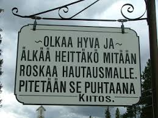

|
 |
Finnish ImmigrantsArrived in the 1890's |
|
The first Finnish immigrants arrived in Long Valley in the 1890s. They
came from eastern Oregon where they had tried homesteading. Long Valley with its forests, mountains
and green meadows appealed to them more than the Oregon desert country. |